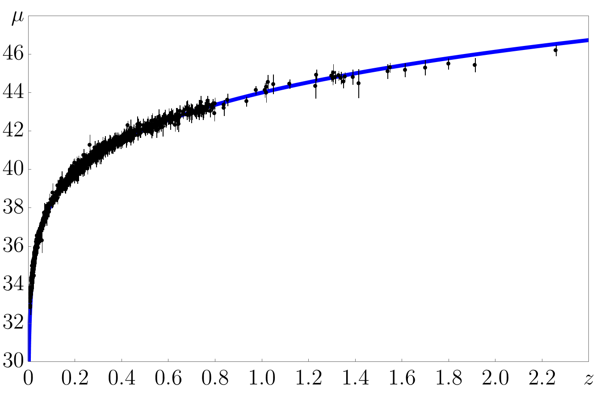
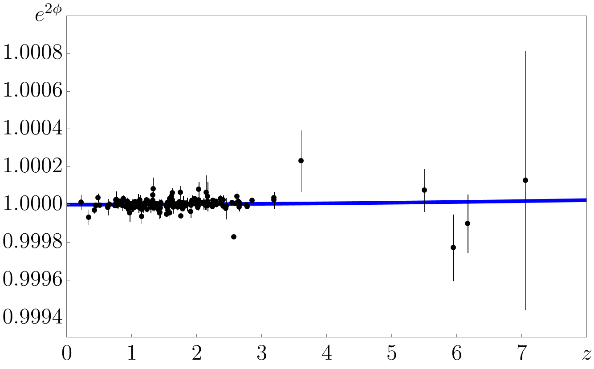
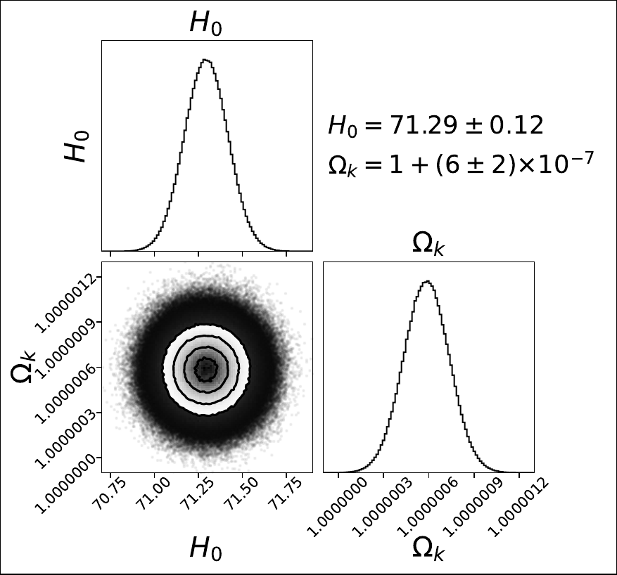
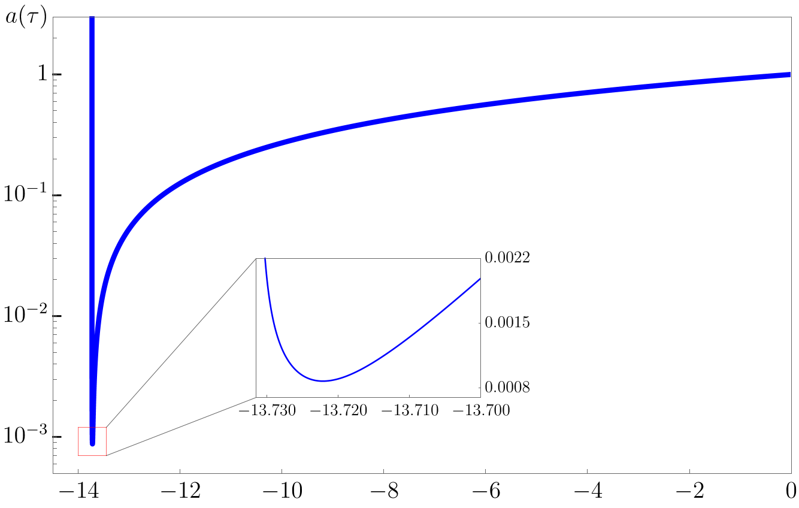

Gravitational Core of Double Field Theory
Solutions
Lecture Notes · Jeong-Hyuck Park
This chapter collects representative solutions and tests: spherical geometries, post-Newtonian limits, wormholes, and cosmological solutions of the EDFE.
Solutions
With the theoretical foundations established, we now turn to specific solutions within the DFT framework.
Any known \({D=10}\) IIA or IIB supergravity solution consistently satisfies the equations of motion, including the Einstein Double Field Equation (EDFE), of type II supersymmetric DFT [Jeon:2012hp]. However, here we focus on more elementary \({D=4}\) solutions.
In General Relativity, the Schwarzschild geometry and de Sitter space are fundamental solutions. The Schwarzschild solution describes the spacetime around a black hole or the exterior geometry of a spherical object, while de Sitter space serves as a model for the large-scale structure of the Universe. Below, we present their counterparts within the framework of Double Field Theory (DFT).
Spherically Symmetric Solution: Generalisation of the Schwarzschild Geometry
Aim. To solve the EDFE in four dimensions under spherical symmetry.
The DFT counterpart to the Schwarzschild geometry in GR is a three-parameter family of vacuum solutions to the \({D=4}\) EDFE, i.e. \(G_{AB}=0\) or ([3beta]). These solutions can be traced back to the work of Burgess, Myers, and Quevedo in 1994 [Burgess:1994kq], who obtained them by performing \(\mathbf{SL}(2,\mathbb{R})\) S-duality rotations on a dilaton–metric solution. The solutions were later re-derived [Ko:2016dxa] as the most general, spherically symmetric, static, asymptotically flat, vacuum geometry of \({D=4}\) DFT. We present the solutions with three constants \(\{h,a,b\}\) in an isotropic coordinate system [Choi:2022srv], where the metric takes the form, with \(r=\sqrt{\vec{x}{\cdot\vec{x} }}\),
The two significant components of the metric are
the string dilaton is given, with \(\gamma_{\pm}=\half\pm\half\sqrt{1-h^2/b^2}\), by
and the \(B\)-field features electric \(H\)-flux,
Several observations can be made about these solutions.
i) If \(b=h=0\), with \(h/b\rightarrow 0\), the solution reduces to the Schwarzschild geometry.
ii) If \(a=0\), the solution reduces to a wormhole geometry [Jang:2024nhm],
where
While the wormhole throat is at \(y=0\), the points of \(y=b_{\pm}\) are curvature-wise singular within Riemannian geometry: \(R\propto 1/(y-b_{\pm})\) as \(y\rightarrow b_{\pm}\). However, as a vacuum solution to the EDFE, the geometry sets both the DFT scalar and Ricci curvature trivial, \(\So=0\) and \(S_{p\brq}=0\). In fact, by choosing the \(B\)-field of the electric \(H\)-flux ([eH]) appropriately to include a term that is pure gauge,
the DFT metric ([00H]) and dilaton ([00d]) can both be made entirely non-singular, as can be seen from
and
Only positive powers of \(\cF(y)\) appear in ([gB]) and ([gBgBd]) after cancellation of the negative powers. This {sufficiently} implies that, as the \(B\)-field gauge transformation is a part of doubled-yet-gauged diffeomorphisms, the curvature singularity as characterised within Riemannian geometry is to be identified as a coordinate singularity within DFT [Morand:2021xeq]. When \(\cF(y)\) vanishes at \({y=b_{\pm}}\), the upper-left block of the generalised metric, corresponding to \(g^{-1}\), becomes degenerate, no invertible Riemannian metric is defined, and thus the geometry is non-Riemannian. From the perspective of DFT, the geometry is regular everywhere [Morand:2021xeq]: it is non-Riemannian at \(y=b_{\pm}\) and Riemannian elsewhere. In fact, it is the same type of non-Riemannian geometry, \((n,\brn)=(1,1)\), as non-relativistic string theory [Gomis:2000bd], as can be seen from ([gB]) and ([gBgBd]) [Ko:2015rha, Morand:2017fnv].
iii) Matching with the parametrised Post-Newtonian (PPN) formalism [Will:1972zz, Will:2014kxa],
we can identify the Newtonian mass and the Eddington-Robertson-Schiff parameters [Choi:2022srv],
iv) The vacuum solution ([vacuum]) represents the external geometry of a compact spherical object, such as a star. The full EDFE ([EDFE00]) then gives an integral formula for the Newtonian mass [Choi:2022srv],
where the integration occurs within the star's interior. Assuming the star's geometry is regular, the integral of the squared electric \(H\)-flux term in ([MGint]) diverges unless \({h = 0}\). To ensure physical consistency, we impose a weak energy condition, \(-K_{t}{}^{t} \geq 0\), and assume a finite Newtonian mass, i.e. \(MG \ll \infty\). Under these conditions, we deduce that the electric \(H\)-flux must be trivial: \({h = 0}\). Consequently, from ([Mbg]), this leads to \({\betappn = 1}\), which aligns with the result in GR, or correspondingly, the Schwarzschild geometry. The constants \(a\) and \(b\) are then determined as follows:
with their square sum satisfying a nontrivial relation: given the star's radius \(r_\star\),
From ([Mbg]), \(\gammappn\) is thereby determined as:
where the numerator corresponds to the Chameleon mass of the string dilaton ([Chameleon]) and the denominator to the Newtonian mass of the star ([MGint]).
v) The current stringent observational bounds on gravity in the solar system are given by \(\gammappn=1+(2.1\pm 2.3)\times 10^{-5}\), as determined from the Shapiro time-delay measurements by the Cassini spacecraft [Will:2014kxa, Bertotti:2003rm]. Consequently, DFT can successfully pass solar system tests, provided the dilatonic Chameleon mass is at least \(10^{-5}\) times smaller than the Sun's Newtonian mass.
Cosmological Solution of Open Universe: Alternative to de Sitter Universe
Aim. To obtain a cosmological solution of DFT consistent with real data.
The de Sitter Universe, while serving as a natural cosmological solution in GR and providing a simple model for the Universe's accelerating expansion, encounters a fundamental limitation in DFT: the cosmological term \(\sqrt{-g}\Lambda\) lacks \(\ODD\) symmetry, as originally pointed out by Gasperini and Veneziano in 1991 [Gasperini:1991ak]. Consequently, the de Sitter Universe is incompatible with the EDFE ([EDFE]) and the implied \(\ODD\)-symmetric extension of the Friedmann equations [Angus:2019bqs]. This incompatibility aligns with the de Sitter swampland conjectures [Danielsson:2018ztv, Obied:2018sgi, Agrawal:2018own, Andriot:2018wzk].
We introduce an alternative cosmological model: an open Universe characterised by negative spatial curvature (\(k < 0\)) that serves as a vacuum solution to the EDFE, providing a compelling alternative to the de Sitter Universe. This solution traces back to the work of Copeland, Lahiri, and Wands in 1994 [Copeland:1994vi], who derived homogeneous and isotropic solutions to the three beta-function equations on the string worldsheet ([3beta]). Building upon this foundation, the model was further refined in [Lee:2023boi], incorporating essential physical parameters: the Hubble constant \(H_{0}\), the spatial curvature scale \(l=1/\sqrt{-k}\), the magnetic \(H\)-flux \(\hh\), as well as additional redundant parameters \(a_{0}\) and \(\phi_{0}\), defined at the (present) conformal time \(\eta = \eta_{0}\).
The vacuum geometry of the open Universe is characterized by the following triplet: the string dilaton,
the (homogeneous & isotropic) magnetic \(H\)-flux,
and the Friedmann-Lema\^{i}tre-Robertson-Walker metric with \(k=-1/l^{2}<0 \),
of which the scale factor is given by the following expression:
Here, \(\zeta\) is a constant and \(\sigma\) is a sign factor (\({\sigma^2=1}\)), both determined by the parameters \(\{H_{0}, l, \hh\}\). The Hubble parameter and two density parameters are defined at arbitrary conformal time \(\eta\) as
At the specific conformal time \(\eta = \eta_0\), the analytic solution for the scale factor ([SF]) yields the Hubble constant, \(H_0 = H(\eta_0)\), as:
which can be solved to express \(\zeta\) and \(\sigma\) in terms of the density parameters at \(\eta = \eta_0\). These expressions are
In other words, \({\sigma = -1} \) if \( \Omega_{0,k} + \Omega_{0,\hh} > 1\); otherwise, \({\sigma = +1}\).
Some comments are in order, as discussed in [Lee:2023boi].
i) The deceleration parameter can be expressed in terms of the density parameters as follows:
which can be readily shown to assume negative values, particularly when \({\Omega_k + \Omega_\hh > 1}\). Such acceleration is only achievable in string frame, where the string frame metric minimally couples to point particles ([particleaction]), thereby ensuring that the equivalence principle remains valid and simultaneously exhibiting a negative sign in the dilaton's kinetic term ([DFT00]). The dilaton drives the acceleration in string frame, without any need for dark energy, but not in Einstein frame.
ii) As dictated by the \(\ODD\) symmetry principle, the string dilaton is expected to couple to gauge bosons, as demonstrated in ([PhiFpsi]), implying that the fine-structure constant is effectively proportional to the exponential of the string dilaton:
However, observational constraints from the absorption spectra of quasars impose stringent limits on the temporal variation of the fine-structure constant [King:2012id, Wilczynska:2015una, Martins:2017qxd, Wilczynska:2020rxx], and consequently on the evolution of the string dilaton \(\phi\). The analytic formula ([analyticphi]) shows that the string dilaton converges at future infinity, \(\eta \rightarrow \infty\). Replacing \(l\) and \(\zeta\) with imaginary numbers, \(-il\) and \(i\zeta\), yields the exact geometry of a closed Universe (\(k > 0\)) (see [Copeland:1994vi] for the explicit expression). However, this substitution transforms the converging hyperbolic tangent functions in ([analyticphi]) into diverging tangent functions, preventing the dilaton \(\phi\) from stabilising during cosmic evolution, which conflicts with the observational constraints from quasars. Similarly, when \(k = 0\), the hyperbolic tangent functions reduce to linear behaviour in time, which is equally inconsistent with the observational requirements. These results underscore the necessity of an open Universe (\(k < 0\)) to ensure that the dilaton \(\phi\) evolves slowly and remains convergent throughout the cosmic evolution.
iii) The vacuum geometry of the open Universe given in ([analyticphi]) and ([SF]), in particular the case with trivial \(H\)-flux (\({\hh=0}\) in ([mHflux])), demonstrates remarkable agreement with late-time cosmological observations, including type Ia supernovae data [Scolnic:2021amr, Riess:2021jrx] and quasar absorption spectra [King:2012id, Wilczynska:2015una, Martins:2017qxd, Wilczynska:2020rxx], as depicted in Figure [FIGcosmo], reproduced from [Lee:2023boi]. Such observations probe the evolution of the Hubble parameter and the potentially varying fine-structure constant up to redshift \(z=a^{-1}-1\approx 7\). Through an analysis of Bayesian inference, the Hubble constant and the curvature density parameter are estimated to be
These imply a curvature scale of \( l=1/\sqrt{-k}\simeq 4.2 \mathrm{Gpc} \) and select the negative sign factor, \({\sigma=-1}\), in ([szs]). Such results are consistent with the analytic limiting behaviours of the scale factor ([SF]):
In other words, there is no coincidence problem.
iv) Extending to higher redshifts, a bounce is expected to have occurred approximately 13.7 gigayears ago. Coincidently, this is comparable to the "age'' of the flat Universe in \(\Lambda\)CDM.

Type Ia Supernovae [Scolnic:2021amr, Riess:2021jrx]

Quasar Absorption Spectra [King:2012id, Wilczynska:2015una, Martins:2017qxd, Wilczynska:2020rxx]

Bayesian Inference with Two Parameters

Bouncing: \(13.7\) Gigayears ago
Agreement of the vacuum geometry of DFT ([analyticphi]), ([SF]) with late-time cosmological data of type Ia supernovae (a) and quasars (b). For the latter, the string dilaton \(\phi\) already appears to be in the convergent phase. Bayesian inference (c) shows that, in sharp contrast to \(\Lambda\)CDM, at present time the curvature density overwhelmingly dominates, \(\Omega_{0,k}\simeq {1+(6\pm 2)\times 10^{-7}}\), implying an open Universe. A bounce (d) is extrapolated to occur \(13.7\) gigayears ago. Figures reproduced from [Lee:2023boi].